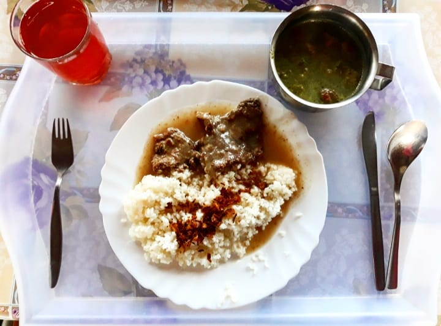

Viedenská roštenka podľa @skolskajedalengt12 — Normy Jedál
Najlepšia na viedenskej roštenke nie je prírodná omáčka, jemná mäsová chuť a ani ryža dusená s pažítkou. Je to najemno nakrájaná vypražená cibuľka, akú vám dajú aj v Big bowle na cestoviny! Ovocný sirup s najmenej 50% ovocnou zložkou je už našťastie konštantou, preto sa netreba báť, že pijete nejaké umeliny. Jedná sa o vysokokvalitný produkt! #viedenskarostenka #rice #meatandgravy #vodasosirupom #spinachsoup #schoollunch #foodporn #highgastronomy #yummy #soupinmug #pitnyrezim #highquality #onion